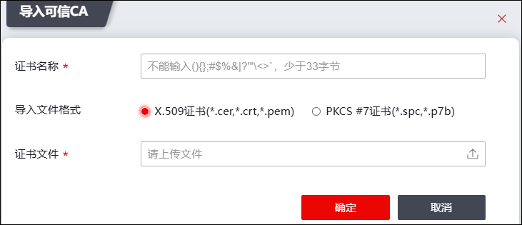
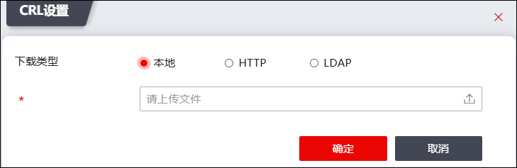
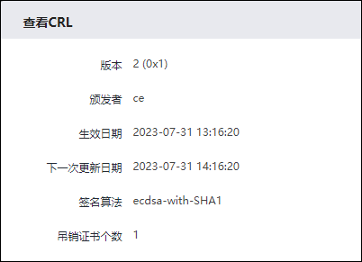
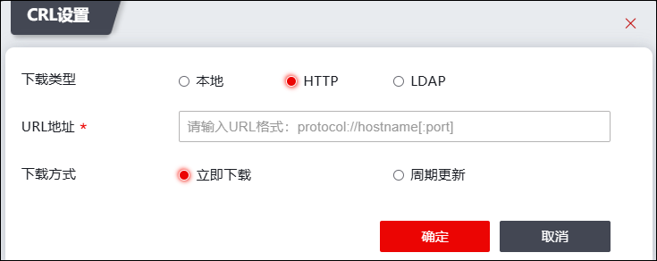
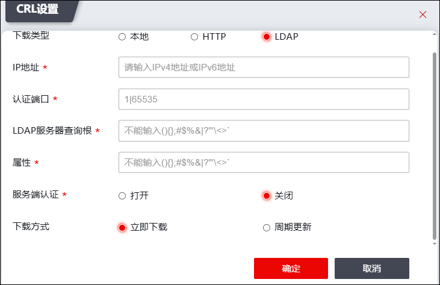
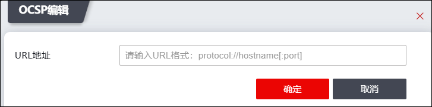
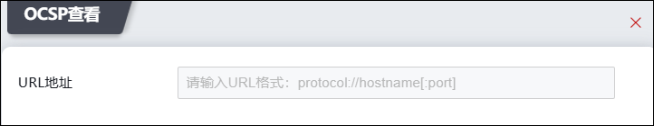

可信CA机构这部分主要存放受信任的CA根证书(通过此CA根证书可以验证该CA机构签发的证书的合法性)，当我们业务上需要验证对方证书合法性时，需要先信任对方证书签发机构的根证书。
选择 。
lCA证书管理
| 步骤1 | 导入可信CA根证书 |
1）点击【导入】按钮，如下图所示。

在导入CA根证书时，各项参数的具体说明如下表所示。
参数 |
说明 |
|---|---|
证书名称 |
设置证书名称信息。 |
导入文件格式 |
选择导入证书的格式。 可选中x.509证书(*.cer、*.crt、*.pem)和PKCS#7证书（*.spc、*.p7b）两种格式。 |
证书文件 |
必选项，点击“ |

2）点击【确定】按钮完成CA根证书的导入。
| 步骤2 | 查看CA证书信息 |
选中证书，点击“查看”按钮，可查看该证书的详细信息。
lCRL文件管理
CRL为证书作废吊销列表，也称作证书黑名单。CRL文件里包含失效的证书个数、下次CRL生成时间和CA中心私钥的签名。CA机构会周期发布 CRL文件，用户可以定期获取某CA证书CRL，可以通过获取到的CRL来验证该CA签发的证书是否吊销。
| 步骤1 | 导入CRL文件 |
1）点击“CRL设置”栏下方的【设置】按钮，如下图所示。

2）选择“本地”，上传CRL文件，点击【确定】即可。
| 步骤2 | 查看CRL信息 |
点击“CRL设置”栏下方的【查看】按钮，可查看CRL详细信息，如下图所示。

| 步骤3 | 设置HTTP信息 |
1）点击“CRL设置”栏下方的【设置】按钮，如下图所示。

2）选择HTTP，填写合法的URL地址，选择下载方式，设置完后点击【确定】即可。
| 步骤4 | 设置LDAP信息 |
1）点击“CRL设置”栏下方的【设置】按钮，如下图所示。

2）选择LDAP，填写服务器IP地址、认证端口、LDAP服务器查询根、属性，选择是否需要服务器认证，需要服务器认证需输入LDAP服务器登录用户名和密码，选择下载方式，设置完后点击【确定】即可。
lOCSP信息管理
OCSP为在线证书状态协议。当用户需要实时查询对方证书是否有效时，可以在可信CA机构管理中找到对方证书签发单位对应的CA根证书，通过配置该根证书的OCSP设置来进行验证。
| 步骤1 | 设置OCSP信息 |
1）点击“OCSP设置”栏下方的【修改】按钮，如下图所示。

2）输入合法的URL地址，点击【确定】即可。
| 步骤2 | 显示OCSP信息 |
点击“OCSP设置”栏下方的【查看】按钮，如下图所示。
